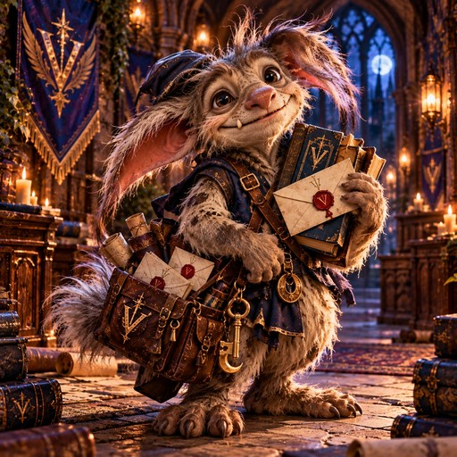

Velmora · the complete guide
The Velmora Compendium
Everything about the school, its houses, its ghosts and every game played in its halls, in one place.

Ask in Discord
Pip Wick
Stuck on how to do something? Ask the hearthling. He answers in public from /help and this Compendium — and tags a Headmaster if he misses.
/piphowdoi your question
The five houses
Every student belongs to one. Everything you do, from exploring to dueling to befriending beasts, earns points for your house.
House Thornmere
“Think it through. Then think it through again.”
House AsterWilde
“Wild Minds. Fierce Hearts. Beautiful Chaos.”
House Veyren
“Some bonds need no words.”
House Caldrin
“Build it anyway. Ask forgiveness of the blueprint later.”
House Oakmont
“Rooted in Patient. Relentless in Purpose.”
Your first week
1 · Get your wand
/wand: give any three words and a wand chooses you. It's yours for good. Then /patronus and /broom use the same words — broom comes with a fixed portrait and silly stats, purely for looking cool.
2 · Make your wizard
/wizard designs your look — including Feminine (full body) — and /mirror shows off your trading card.
3 · Adopt a familiar
/familiar adopt picks a salamander, raven or fox. Care for it with /familiar feed, pet and play once a day, and send it out with /familiar scout.
4 · Go exploring
/explore and /forage in each place's channel fill your /satchel. Keep an eye out for beasts — and study them with /study.
5 · Duel someone
/duel challenges a classmate: best of three, spells chosen in secret.
6 · Check your standing
/profile shows everything about you. /standings shows who's winning the Cup.
Everything in the Compendium
🏆 Houses & the House Cup
Five houses, one cup. How points work, seasons, challenges, beans and the Tri-Wizard roll.
Open →👻 The Ghosts
Six founders who never quite left, and the full story of each one.
Open →🗺️ Exploring Velmora
The Garden, Library, Dungeons, Forbidden Woods and Observatory, plus every item you can find there.
Open →🦔 The Bestiary
All 70 beasts (including Nifflers), how befriending works, and the Beast Journal.
Open →⚡ Duels & Wild Threats
Five spells, ranks and titles, and the creatures that crawl into the channels.
Open →🕳️ The Descent
A hundred-floor solo dungeon. Practice cleared floors for loot — nearby floors can sharpen a free stat pick. Wins bind your army for castles.
Open →🏰 Castles & Army
Six keeps, Descent armies, Wed & Sat sieges. Hold a castle for its perk — reinforce, abandon, or march.
Open →🏟️ Quidditch
House matches and scrambles, five rounds, a Snitch that can end it all, and a title ladder to climb.
Open →🪄 Wands, Patronuses & Familiars
Every wood and core, all 40 patronus forms, and the three familiars.
Open →🧹 The Brooms
All 100 unique broom portraits — names, looks, and blurbs. Claimed with /broom.
💎 Wizard Cards & Gear
Design your wizard, collect 40 pieces of gear, earn titles and stars.
Open →📜 Tales of Velmora
Pages left behind by students. Read them closely.
Open →⌨️ Every Command
Everything you can type — Marketplace, potions, chess, Pip, and more.
Open →